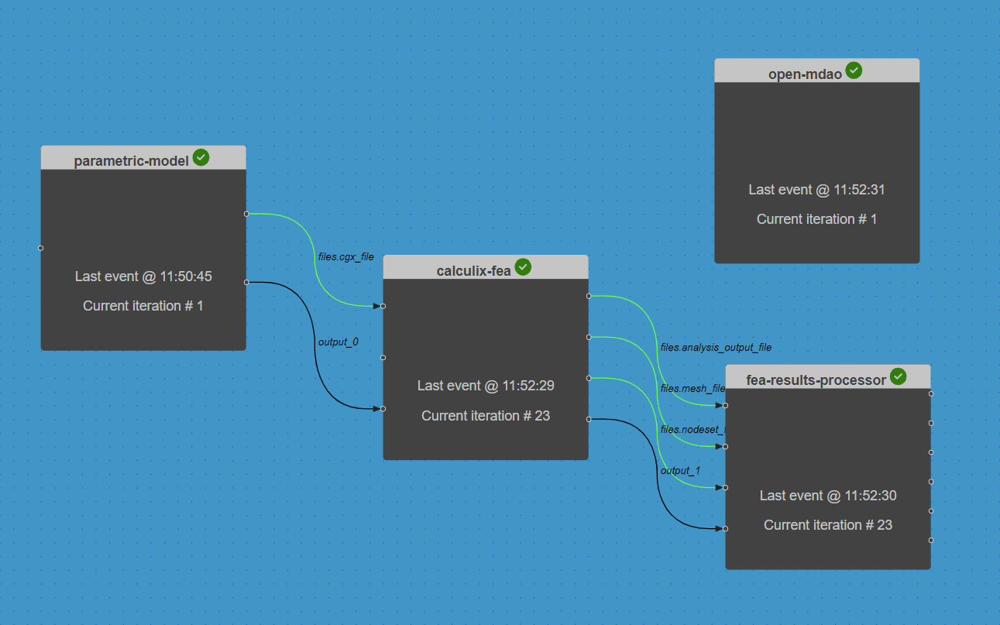

Automating the design optimisation of the composite wing model
Contents
Automating the design optimisation of the composite wing model#
Duration: 15 min
Driver components can be used to automate complex analysis workflows.
In the previous example, we performed a parametric study on a single variable. In this tutorial we go one step further by re-using the OpenMDAO optimisation component from the Simple optimisation problem example to optimise the wing design for minimum wing incidence at the tip.
>> The files for this tutorial are now on Github.
{kind=link}
Opening a saved session#
Follow the process outlined in the previous example for Opening a saved session.
Automating a design optimisation study#
The aim is to determine which composite fibre angle minimises the deflected wing incidence (“Ry”), whilst satisfying the design constraint on the maximum allowable vertical deflection (“Uz”) of 6 cm maximum.
To answer this question, we can perform a design optimisation study. This example is based on the pure python implementation in Reference 1.
The driver component#
As in the previous example, the variable of interest is the calculix-fea input variable fibre_rotation_angle.ORI_0.1.
The driver component is identical to the OpenMDAO optimisation component used in the Simple optimisation problem example, except for the driver parameters, which have been adjusted for the wing optimisation problem:
The “input_variables” and “output_variables” parameters set the optimisation variables, objective and constraint functions.
The calculation of total derivatives across the chained components (using finite differencing) is requested by setting
"approx_totals": trueand"fd_step": 1.0in the driver parameters.Optimisation iteration history plots are requested by adding the “plot_history” option into the “visualise” parameter list.
To create the driver component:
Right-click in the workspace and select
Add Empty Node. Select the empty component to edit it.In the
Propertiestab, fill in the component name,open-mdao, and select the component APIgeneric-python3-driver:latest.Copy the contents of the
setup.py,compute.py,requirements.txtfiles from below into a text editor, save them locally. Then upload them under thePropertiestab.In the
Propertiestab check the box next to theDriveroption.Copy the contents of the parameters JSON object below into the
Parameterstab text box.Copy the contents of the
om_component.pyfile from below into a text editor and save it locally. Then upload it under theParameterstab by selectingupload user input files.Select
Save datato save and close the component.
from datetime import datetime
from pathlib import Path
def setup(
inputs: dict = {"design": {}, "implicit": {}, "setup": {}},
outputs: dict = {"design": {}, "implicit": {}, "setup": {}},
parameters: dict = {
"user_input_files": [],
"inputs_folder_path": "",
"outputs_folder_path": "",
},
) -> dict:
"""Editable setup function."""
if "driver" not in parameters:
# assume we want to run an optimisation with default settings
parameters["driver"] = {"type": "optimisation"}
message = f"{datetime.now().strftime('%Y%m%d-%H%M%S')}: Setup completed."
return {"message": message, "parameters": parameters}
from datetime import datetime
from pathlib import Path
import traceback
from contextlib import redirect_stdout
import numpy as np
import openmdao.api as om
from matplotlib import pyplot as plt # type: ignore
from component_api2 import call_compute
from om_component import OMexplicitComp # type: ignore
def compute(
inputs: dict = {"design": {}, "implicit": {}, "setup": {}},
outputs: dict = {"design": {}, "implicit": {}, "setup": {}},
partials: dict = {},
options: dict = {},
parameters: dict = {
"user_input_files": [],
"inputs_folder_path": "",
"outputs_folder_path": "",
},
) -> dict:
"""Editable compute function."""
print("OpenMDAO problem setup started.")
workflow = parameters["workflow"]
all_connections = parameters["all_connections"]
run_folder = Path(parameters["outputs_folder_path"])
# 1) define the simulation components
prob = om.Problem()
for component in workflow:
if "ExplicitComponents" in parameters:
kwargs = [
comp["kwargs"]
for comp in parameters["ExplicitComponents"]
if comp["name"] == component
][0]
else:
kwargs = {}
prob.model.add_subsystem(
reformat_compname(component),
OMexplicitComp(compname=component, run_number=0),
**kwargs,
)
if "ExecComps" in parameters and parameters["ExecComps"]:
for component in parameters["ExecComps"]:
prob.model.add_subsystem(
reformat_compname(component["name"]),
om.ExecComp(component["exprs"]),
**component["kwargs"],
)
# 2) define the component connections
for connection in all_connections:
if connection["type"] == "design":
prob.model.connect(
reformat_compname(connection["origin"])
+ "."
+ connection["name_origin"].replace(".", "-"),
reformat_compname(connection["target"])
+ "."
+ connection["name_target"].replace(".", "-"),
)
if parameters["driver"]["type"] == "optimisation":
# 3) setup the optimisation driver options
prob.driver = om.ScipyOptimizeDriver()
prob.driver.options["optimizer"] = parameters["optimizer"]
prob.driver.options["maxiter"] = parameters["max_iter"]
prob.driver.options["tol"] = parameters["tol"]
prob.driver.opt_settings["disp"] = parameters["disp"]
prob.driver.options["debug_print"] = parameters["debug_print"]
if "approx_totals" in parameters and parameters["approx_totals"]:
# ensure FD gradients are used
prob.model.approx_totals(
method="fd", step=parameters["fd_step"], form=None, step_calc=None
)
elif parameters["driver"]["type"] == "doe":
# 3) alternative: setup a design of experiments
prob.driver = om.DOEDriver(
om.UniformGenerator(num_samples=parameters["driver"]["samples"])
)
# 4) add design variables
for var in parameters["input_variables"]:
upper = var["upper"]
lower = var["lower"]
if "component" in var:
comp = reformat_compname(var["component"])
prob.model.add_design_var(
f"{comp}.{var['name'].replace('.', '-')}",
lower=lower,
upper=upper,
)
else:
prob.model.add_design_var(
var["name"].replace(".", "-"), lower=lower, upper=upper
)
prob.model.set_input_defaults(var["name"].replace(".", "-"), var["value"])
# 5) add an objective and constraints
for var in parameters["output_variables"]:
comp = reformat_compname(var["component"])
name = f"{comp}.{var['name'].replace('.', '-')}"
# set scaling from parameter input file
if "scaler" in var:
scaler = var["scaler"]
else:
scaler = None
if "adder" in [var]:
adder = var["adder"]
else:
adder = None
if var["type"] == "objective":
prob.model.add_objective(name, scaler=scaler, adder=adder)
elif var["type"] == "constraint":
if "lower" in var:
lower = var["lower"]
else:
lower = None
if "upper" in var:
upper = var["upper"]
else:
upper = None
prob.model.add_constraint(
name, lower=lower, upper=upper, scaler=scaler, adder=adder
)
prob.setup() # required to generate the n2 diagram
print("OpenMDAO problem setup completed.")
if "visualise" in parameters and "n2_diagram" in parameters["visualise"]:
# save n2 diagram in html format
om.n2(
prob,
outfile=str(run_folder / "n2.html"),
show_browser=False,
)
if parameters["driver"]["type"] == "optimisation":
dict_out = run_optimisation(prob, parameters, run_folder)
# elif parameters["driver"]["type"] == "check_partials":
# dict_out = run_check_partials(prob, parameters)
# elif parameters["driver"]["type"] == "check_totals":
# dict_out = run_check_totals(prob, parameters)
# elif parameters["driver"]["type"] == "doe":
# dict_out = run_doe(prob, parameters)
# elif parameters["driver"]["type"] == "post":
# dict_out = run_post(prob, parameters)
else:
raise ValueError(
f"driver {parameters['driver']['type']} is not a valid component driver type."
)
message = f"{datetime.now().strftime('%Y%m%d-%H%M%S')}: OpenMDAO compute completed."
print(message)
outputs["design"] = dict_out
return {"message": message, "outputs": outputs}
def run_optimisation(prob, parameters, run_folder):
# 6) add a data recorder to the optimisation problem
r_name = str(
run_folder
/ (
"om_problem_recorder_"
+ datetime.now().strftime("%Y%m%d-%H%M%S")
+ ".sqlite"
)
)
r = om.SqliteRecorder(r_name)
prob.driver.add_recorder(r)
prob.driver.recording_options["record_derivatives"] = True
# setup the problem again
prob.setup()
if "visualise" in parameters and "scaling_report" in parameters["visualise"]:
# NOTE: running the model can generate large large amounts of stored data in orchestrator, which
# can cause prob.setup() to fail if it is called again, so only execute
# prob.run_model() after all setup has been completed
with open(run_folder / "scaling_report.log", "w") as f:
with redirect_stdout(f):
prob.run_model()
prob.driver.scaling_report(
outfile=str(run_folder / "driver_scaling_report.html"),
title=None,
show_browser=False,
jac=True,
)
# 7) execute the optimisation
try:
with open(run_folder / "run_driver.log", "w") as f:
with redirect_stdout(f):
prob.run_driver()
except Exception as e:
print(f"run driver exited with error: {e}")
tb = traceback.format_exc()
raise ValueError("OpenMDAO Optimisation error: " + tb)
opt_output = {}
# print("Completed model optimisation - solution is: \n inputs= (")
for var in parameters["input_variables"]:
name = var["name"]
# print(
# f"{comp}.{name}: "
# + str(prob.get_val(f"{comp}.{name.replace('.', '-')}"))
# + " "
# )
if "component" in var:
comp = var["component"]
opt_output[f"{comp}.{name}"] = prob.get_val(
f"{reformat_compname(comp)}.{name.replace('.', '-')}"
).tolist()
else:
opt_output[name] = prob.get_val(name.replace(".", "-")).tolist()
# print("), \n outputs = (")
for var in parameters["output_variables"]:
comp = var["component"]
name = var["name"]
# print(
# f"{comp}.{name}: "
# + str(prob.get_val(f"{comp}.{name.replace('.', '-')}"))
# + " "
# )
opt_output[f"{comp}.{name}"] = prob.get_val(
f"{reformat_compname(comp)}.{name.replace('.', '-')}"
).tolist()
# print(")")
print(opt_output)
if "visualise" in parameters and "plot_history" in parameters["visualise"]:
post_process(parameters, run_folder, r_name)
return opt_output
def reformat_compname(name):
# openmdao doesn't allow "-" character in component names
return name.replace("-", "_")
def post_process(parameters, run_folder, r_name, only_plot_major_iter=True):
# read database
# Instantiate your CaseReader
cr = om.CaseReader(r_name)
# Isolate "problem" as your source
driver_cases = cr.list_cases("driver", out_stream=None)
# plot the iteration history from the recorder data
inputs_history = {
key: []
for key in [
f"{reformat_compname(var['component'])}.{var['name'].replace('.', '-')}"
for var in parameters["input_variables"]
]
}
outputs_history = {
key: []
for key in [
f"{reformat_compname(var['component'])}.{var['name'].replace('.', '-')}"
for var in parameters["output_variables"]
]
}
for key in driver_cases:
case = cr.get_case(key)
if (only_plot_major_iter and case.derivatives) or not only_plot_major_iter:
# get history of inputs
for key in inputs_history:
inputs_history[key].append(case.outputs[key])
# get history of outputs
for key in outputs_history:
outputs_history[key].append(case.outputs[key])
# plot output in userfriendly fashion
_plot_iteration_histories(
inputs_history=inputs_history,
outputs_history=outputs_history,
run_folder=run_folder,
)
def _plot_iteration_histories(
inputs_history=None, outputs_history=None, run_folder=None
):
# plot input histories
for key in inputs_history:
input_data = inputs_history[key]
input_data = np.array(input_data)
iterations = range(input_data.shape[0])
plt.figure()
for data_series in input_data.T:
plt.plot(iterations, data_series, "-o")
plt.grid(True)
plt.title(key)
plt.savefig(str(run_folder / (key + ".png")))
# plot output histories
for key in outputs_history:
output_data = outputs_history[key]
output_data = np.array(output_data)
iterations = range(output_data.shape[0])
plt.figure()
for data_series in output_data.T:
plt.plot(iterations, data_series, "-o")
plt.grid(True)
plt.title(key)
plt.savefig(str(run_folder / (key + ".png")))
plt.show()
numpy == 1.21.5
openmdao == 3.16.0
matplotlib == 3.5.2
{
"optimizer": "SLSQP",
"max_iter": 20,
"tol": 1e-8,
"disp": true,
"debug_print": [
"desvars",
"ln_cons",
"nl_cons",
"objs",
"totals"
],
"approx_totals": true,
"fd_step": 1.0,
"input_variables": [
{
"component": "calculix-fea",
"name": "fibre_rotation_angle.ORI_0.1",
"lower": -50,
"upper": 50,
"value": 5.0
}
],
"output_variables": [
{
"component": "fea-results-processor",
"type": "objective",
"name": "Ry",
"value": 0.0
},
{
"component": "fea-results-processor",
"type": "constraint",
"name": "Uz",
"value": 0.0,
"lower": -0.06,
"upper": 0.06
}
],
"driver": {
"type": "optimisation"
},
"visualise": [
"n2_diagram",
"plot_history"
]
}
""" Optimisation Component classes for OpenMDAO and associated utilities."""
import numpy as np
import openmdao.api as om # type: ignore
from component_api2 import call_compute, call_setup
import traceback
class OMexplicitComp(om.ExplicitComponent):
"""standard component that follows the OM conventions"""
def __init__(self, compname, run_number):
self.compname = compname
self.run_number = run_number
self.get_grads = False
self.iter = 0
self.partial_dict = None
super().__init__()
def setup(self):
message = {"component": self.compname}
_, component_dict = call_setup(message)
inputs = component_dict["input_data"]["design"]
outputs = component_dict["output_data"]["design"]
# initialise the inputs
if inputs:
for variable in inputs:
self.add_input(variable.replace(".", "-"), val=inputs[variable])
# initialise the outputs
if outputs:
for variable in outputs:
self.add_output(variable.replace(".", "-"), val=outputs[variable])
def setup_partials(self):
# Get the component partial derivative information
message = {"component": self.compname}
_, component_dict = call_setup(message)
if "partials" in component_dict and component_dict["partials"]:
self.partial_dict = component_dict["partials"]
for resp, vars in self.partial_dict.items():
for var, vals in vars.items():
self.declare_partials(
resp.replace(".", "-"), var.replace(".", "-"), **vals
)
else:
# calculate all paritials using finite differencing
self.declare_partials("*", "*", method="fd")
def compute(self, inputs, outputs, discrete_inputs=None, discrete_outputs=None):
print("Calling compute.")
# calculate the outputs
# Note: transform all np.ndarrays into nested lists to allow formatting to json
input_dict = {"design": reformat_inputs(inputs._copy_views())}
message = {
"component": self.compname,
"inputs": input_dict,
"get_grads": False,
"get_outputs": True,
}
print("message: \n", str(message))
try:
_, data = call_compute(message)
if not "outputs" in data:
raise ValueError(f"Error: Compute output missing - output was: {data}.")
except Exception as e:
print(f"Compute of {self.compname} failed, input data was: {str(message)}")
tb = traceback.format_exc()
print(tb)
raise ValueError(
f"OM Explicit component {self.compname} compute error: " + tb
)
val_outputs = data["outputs"]["design"]
# OpenMDAO doesn't like the outputs dictionary to be overwritten, so
# assign individual outputs one at a time instead
for output in outputs:
outputs[output] = val_outputs[output.replace("-", ".")]
def compute_partials(self, inputs, J):
"""Jacobian of partial derivatives."""
print("Calling compute_partials.")
self.iter += 1
input_dict = reformat_inputs(inputs._copy_views())
message = {
"component": self.compname,
"inputs": input_dict,
"get_grads": True,
"get_outputs": False,
}
print("message: \n", str(message))
try:
_, data = call_compute(message)
if not "partials" in data:
raise ValueError(
f"Error: Compute partial derivatives missing - output was: {data}."
)
self.partial_dict = data["partials"]
except Exception as e:
print(
f"Compute partials of {self.compname} failed, input data was: {str(message)}"
)
tb = traceback.format_exc()
print(tb)
raise ValueError(
f"OM Explicit component {self.compname} compute error: " + tb
)
if self.partial_dict:
for resp, vars in self.partial_dict.items():
for var, vals in vars.items():
if "val" in vals:
J[resp.replace(".", "-"), var.replace(".", "-")] = vals["val"]
# print(dict(J))
else:
raise ValueError(f"Component {self.compname} has no Jacobian defined.")
def reformat_inputs(inputs):
input_dict = inputs
for key in [*input_dict.keys()]:
new_key = key.split(".")[1].replace("-", ".")
input_dict[new_key] = input_dict.pop(key)
if isinstance(input_dict[new_key], np.ndarray):
input_dict[new_key] = input_dict[new_key].tolist()
return input_dict
Add design variables and connections#
Despite all the components seeming valid, we would encounter errors if we tried to launch the Run now.
By inspecting the driver compute function, we can see that OpenMDAO is only aware of design variable inputs, outputs and connections (connection["type"] == "design").
The design variable connections in particular are used by OpenMDAO to determine the order of component execution.
It is necessary to define the following artificial design variables and connections before we can launch the Run.
Select the parametric-model component and update the Inputs and Outputs tabs:
{
"input_0": 0.1
}
{
"files.cgx_file": "default",
"output_0": 1.1
}
Select the calculix-fea component and update the Inputs and Outputs tabs:
{
"files.cgx_file": "default",
"fibre_rotation_angle.ORI_0.1": 0,
"output_0": 1.1
}
{
"files.analysis_output_file": "default",
"files.mesh_file": "default",
"files.nodeset_file": "default",
"output_1": 1.1
}
Select the fea-results-processor component and update the Inputs tab only:
{
"files.analysis_output_file": "default",
"files.mesh_file": "default",
"files.nodeset_file": "default",
"output_1": 1.1
}
Next, create two design variable connections:
from the ‘output_0’ output handle of the parametric-model component to the ‘output_0’ input handle of the calculix-fea component.
from the ‘output_1’ output handle of the calculix-fea component to the ‘output_1’ input handle of the fea-results-processor component.
Execute the workflow#
We can now execute the design optimisation by selecting the play symbol ▶ in the Run controls interface.
The Run should complete after 23 iterations of the chained components (1 iteration of the open-mdao component).
Note
Note that the parametric-model component executes only once, since it’s artificially created design variable input (“input_0”: 0.1) doesn’t change.
Inspect the outputs#
The Run log summarises the output of the components. Open the log by selecting View Log in the interface controls.
The “run_output” entry (at the end of the log) should state that the “OpenMDAO compute completed”.
Next, close the Run log and select the open-mdao component.
Then select the Log tab and click on download files snapshot.
The optimisation study outputs are summarised at the end of the ‘run_driver.log’ file in the ‘outputs’ folder, as shown below. We can also inspect the convergence history plots of the design variable, objective and constraints functions in the same folder.
The optimal fibre rotation angle converges after 11 SLSQP algorithm iterations to ~22.68 degrees, which results in a wing tip incidence of -0.0377 radians and a vertical deflection of 6cm.
Driver debug print for iter coord: rank0:ScipyOptimize_SLSQP|22
---------------------------------------------------------------
Design Vars
{'calculix_fea.fibre_rotation_angle-ORI_0-1': array([22.68391541])}
Calling compute.
message:
{'component': 'parametric-model', 'inputs': {'design': {'input_0': [0.1]}}, 'get_grads': False, 'get_outputs': True}
Calling compute.
message:
{'component': 'calculix-fea', 'inputs': {'design': {'fibre_rotation_angle.ORI_0.1': [22.683915410923078], 'output_0': [1.1]}}, 'get_grads': False, 'get_outputs': True}
Calling compute.
message:
{'component': 'fea-results-processor', 'inputs': {'design': {'output_1': [24.0]}}, 'get_grads': False, 'get_outputs': True}
Nonlinear constraints
{'fea_results_processor.Uz': array([0.05999995])}
Linear constraints
None
Objectives
{'fea_results_processor.Ry': array([-0.03771947])}
Optimization terminated successfully (Exit mode 0)
Current function value: -0.03771946528223136
Iterations: 11
Function evaluations: 22
Gradient evaluations: 11
Optimization Complete
-----------------------------------
{kind=link}
{kind=link}
{kind=link}
Clean-up#
Delete your session by selecting New in the interface.
It may take a minute or so for the Cloud session to be reset.